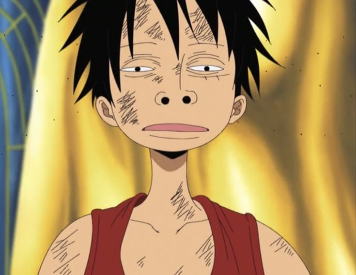

Curriculum Vitae
Dados Pessoais

Nome:
Monkey D. Luffy
Tripulação:
Piratas do Chapéu de Palha
Posição: Capitão e Yonkou
Origem:
East Blue
Fruta:
Hito-Hito No Mi modelo: deus do Sol Nika
Formação
Titulação Máxima:
Yonkou
Professores:
Monkey D. Garp
;
Silvers Rayleigh
Localização Atual: a Caminho de
Elbaf
Habilidades
Atualmente detém os poderes de
Nika
Haki da Observação
Haki do Armamento
Haki do Rei
Voz de Todas as Coisas
Objetivo
Encontrar o One Piece
Se Tornar o Rei dos Piratas
Página desenvolvida por
HenriqOlive